Box Topology über einem unendlichen Produkt der reellen Zahlen als nicht zusammenhängend
1. Satz
Sei 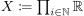 mit der Box-Topology gegeben.
Dann ist  nicht zusammenhängend
nicht zusammenhängend
2. Beweis
Sei 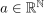, so ist 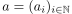 eine Folge
Diese ist entweder beschränkt oder unbeschränkt; Sei 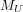 die Menge der unbeschränkten Folgen und die Menge der beschränkten Folgen
Dann gilt 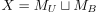.
Ferner ist bzw. nichtleer - z.B. wegen 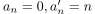
Wir zeigen, dass für eine Folge  - o.B.d.A. beschränkt - die Menge eine Umgebung ist.
So gilt, dass die Menge der Folgen 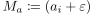 mit 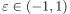 eine Teilmenge von ist
Ferner ist 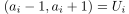 offen in
- o.B.d.A. beschränkt - die Menge eine Umgebung ist.
So gilt, dass die Menge der Folgen 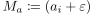 mit 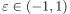 eine Teilmenge von ist
Ferner ist 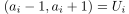 offen in  , d.h. 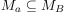 ist eine Umgebung von
, d.h. 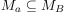 ist eine Umgebung von  .
Aus der Offenheit und Umgebung aller Punkte folgt, dass offen ist.
.
Aus der Offenheit und Umgebung aller Punkte folgt, dass offen ist.
Analoges konstrukt lässt sich auf übertragen.
Somit sind 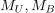 offen und